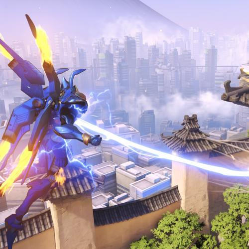
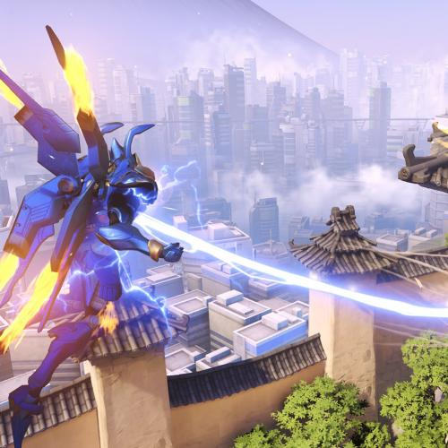
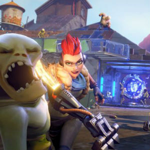
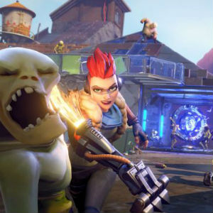

Overwatch
L'histoire d'Overwatch se situe dans un monde nÈo-futuriste (plus prÈcisÈment en 2074), des annÈes aprËs la rÈsolution d'une guerre impliquant robots et humains, appelÈe Crise des Omniums. Les deux camps se sont en effet affrontÈs suite ‡ l'hostilitÈ qu'avaient manifestÈ plusieurs Omniaques, des robots, qui, contrairement ‡ leurs congÈnËres, dÈclaraient Ítre dotÈs d'une conscience...si tu veux la suite renseigne toi sur wikipedia


 
